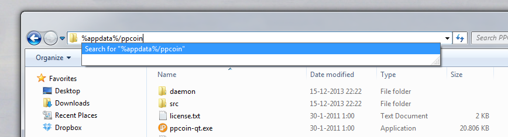
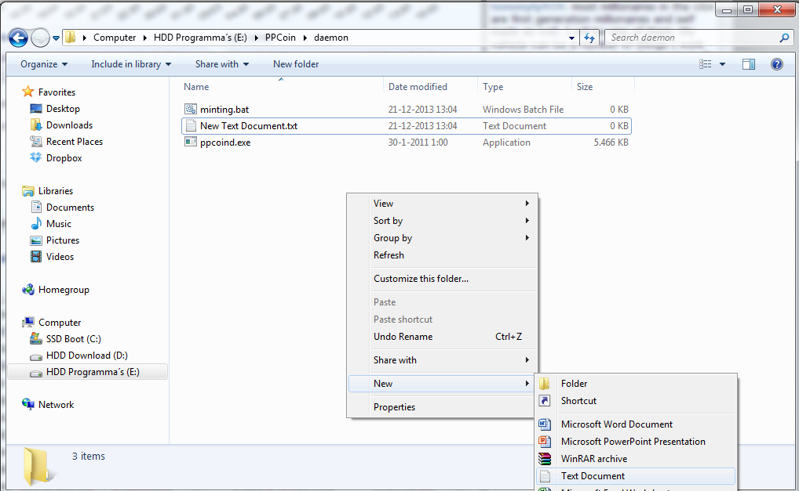
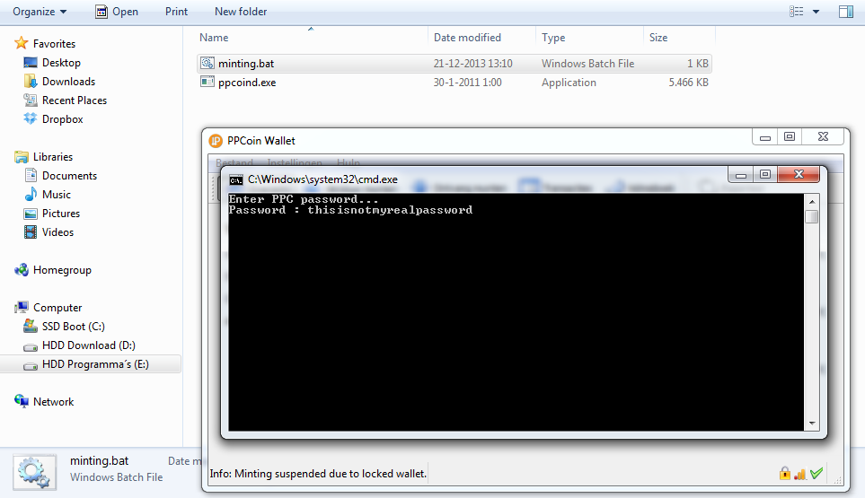
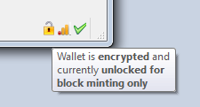

Peercoin (PPC) uses a novel, green and very interesting method of network validation and mining. Most alternative crypto-currencies in existence are forks of Bitcoin, with changed mining parameters or different mining algorithms. Miners maintain the network and check transactions, while spending a lot of energy on cryptographic brute force puzzles. Blockchain.info estimates that mid December 2013, Bitcoin mining takes up 22 million dollars or 150.000 megawatts of energy PER DAY. Peercoin also started out as a Proof-Of-Work network. But as more blocks and coins have been mined, the network switches slowly to Proof-Of-Stake validation. With it we also switch to a new approach of securing the network. In Peercoin terms this process of generating coins by stake is called minting. And if you have a stake in Peercoin (PPC), coins, you can mint too!
This guide will explain what minting is, how to mint coins and what factors influence minting speed.All coins in the Peercoin network collect coin age. Your stake is calculated from this coinage, measured by last transaction, and multiplied with the amount of coin (time * coins). Transferred coins lose their age and start a new "life" as fresh coins. When you keep coins for 30 days, they are old enough to start the minting process. From that moment on the software tests the coins, if they solve the puzzle set for it. You can compare this with a raffle. However you keep the tickets every time you do not win a round. And with it the chance of producing a valid solution of the next puzzle increases. More coins equals more raffle tickets. So 100 coins at an age of 30 days are twice as likely to solve the "puzzle" as 50 coins with 30 age days. The maximum age a coin can have is 90 days, after this the coin does not age further. When a puzzle is solved you can mint 1% of your input, by sending 101% of the coin to yourself. With it you "consume" your build up coin-age. As you test against a limited number of raffle tickets, this requires significantly less power. Attacks become more difficult as well, instead of controlling 51% calculating power, you need 51% of the coins that are put up as stake! More information can be found in the Peercoin whitepaper.
Statistically you can get 1% interest on your coins if you mint. You only mint when your wallet is open, but as the resources use is a lot lower than mining, you'll hardly notice it. Your wallet is unlocked, but you will still need your passphrase for transactions. Future wallet version will support in wallet minting, possibly without decrypting.
The Peercoin-QT wallet software takes care of this whole process automatically but it needs a few configuration before it can start.Download and install the Peercoin-Qt wallet if you have not done so already. Encrypt your wallet with a good pass-phrase. Write this down and keep it somewhere safe, if you forget the pass-phrase you will lose your coins. The wallet encryption option can be found under the settings tab in the PeercoinQt wallet program.
2) Configure the software:Open up explorer and select the navigation bar. Type in: %appdata%/PPCoin
 Now create a text document. Open it up in notepad and copy the following information.
The reserve balance option sets the number of coins you do not put up for stake. The staked coins cannot be spend for 520 blocks (+/- one month)!
Be sure to edit the rpc user and rpc password lines! Pick a good long random password, do not use your wallet passphrase!
#ppcoin.conf # JSON-RPC options (for controlling a running ppcoind process) #Server mode allows Qt to accept JSON-RPC commands server=1 # You must set rpcuser and rpcpassword to secure the JSON-RPC api rpcuser= "A username" rpcpassword= "A random password" #The reserve balance field is the minimum amount of coins you want to have available and NOT put up as stake. #The reason for this is that if you are generating proof of stake you cannot spend those coins for 520 blocks. #reservebalance=25
Rename the file to PPCoin.conf
3) Set-up the minting daemon:Go back to the Peercoin-Qt wallet folder and go to the daemon folder. Create a new text document. Copy over this information:
@echo off @echo Enter PPC password... SET /P variable=Password : ppcoind walletpassphrase %variable% 9999999 true
Save the document and rename it to Minting.bat
4) Start minting:Run the PeercoinQt wallet. The bottom left should display a message that the wallet is locked and the minting process is suspended.
Now double click the minting.bat file and enter your passphrase.
If the bottom right corner shows a unlocked padlock after 30 seconds you are now minting. Congratulations!